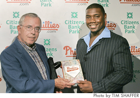

Houston
Street
2005 Oakland Athletics, American League
Born: August 2, 1983 in Austin, TX
Height: 6'0"
Playing Weight: 187 lbs.
Throws right, bats right.
Rookie Year, 2005: Primary Position pitcher. His 1.72 ERA was second
to Mariano Rivera among AL closers. Allowed only 3 HR in 78 1/3
innings.
Total Career, 1 year: Athletics 2005
| |
Record |
ERA |
G |
GS |
SO |
IP |
| Lifetime |
5-1 |
1.72 |
67 |
0 |
72 |
78.1 |
Twenty-two year old Houston Street, whose relief pitching was
a key factor in Oakland's ability to remain in West Division contention
well into September, became the second consecutive member of his
ball club to earn Rookie of the Year honors. Shortstop Bobby Crosby
was the 2004 American League winner.
Street, as '05 National League honoree Ryan Howard, earned an
opportunity to play regularly when a teammate became injured. Two
disabled players in fact. A's closer Octavio Dotel went down with
a season-ending elbow injury in late May. In came young Street who
had made the opening day roster only because reliever Chad Bradford
required springtime surgery.
Oakland's new closer was magnificent. Seventy-two strikeouts in
his 78 1/3 innings over 67 games. A 1.72 earned run average. An
opponents' batting average of just .194. Among the 53 hits Street
sparsely scattered, only three were home runs.
With Street's selection, the Athletics now join the Browns/Orioles
franchise with seven Rookies of the Year. Only the Yankees with
eight have more among American League clubs. New York's most-recent,
Derek Jeter, was crowned in 1996. The A's list three in the meantime—Ben
Grieve (1998), Crosby (2004), and then Houston Street.
BACK
TO TOP
Ryan Howard
2005 Philadelphia Phillies, National League
Born: November 19, 1979 in St. Louis, MO
Height: 6'4"
Playing Weight: 260 lbs.
Bats left, throws left.
Rookie Year, 2005: Primary Position first base. .288 avg., 22 HR,
63 RBI in only 88 games. Led team with .567 slugging average.
Total Career, 2 years: Phillies 2004-05
| |
BA |
G |
H |
2B |
3B |
HR |
RBI |
| 2005 |
.288 |
88 |
90 |
17 |
2 |
22 |
63 |
| Lifetime |
.288 |
107 |
101 |
22 |
2 |
24 |
68 |
After registering one of the most prolific offensive seasons in
modern minor league baseball, young Ryan Howard entered the Phillies'
expanded 2004 September lineup and immediately showed that his qualifications
for big league consideration were indeed authentic.
His .282 average and long-ball power in that limited 19-game late
season audition earned him the right to a thorough exam in the following
Spring Training. However, as the 2005 season began, Ryan had been
re- assigned to Triple A, because popular Jim Thome was still entrenched
at first base in Philadelphia.
Fortuitously for Howard, and unfortunately for the incumbent, Thome
was forced to the disabled list in July. Enter Ryan Howard from
Scranton/Wilkes-Barre. He immediately made himself at home, and
made a positive impression on Phillies officials and Phillies fans.
His 22 homers in little more than a half season, and his .567 slugging
percentage were key ingredients in his team's drive to a mere one
game short of post-season Wild Card status.
Having been rated by Baseball America in 2004 as the Philadelphia
Organization's top prospect, Ryan Howard clearly achieved Rookie
of the Year laurels and established for himself a very promising
major league future.

Bob Bloss hands his book Rookies
of the Year to
Philadelphia Phillies' Rookie of the Year 2005
Ryan Howard. |